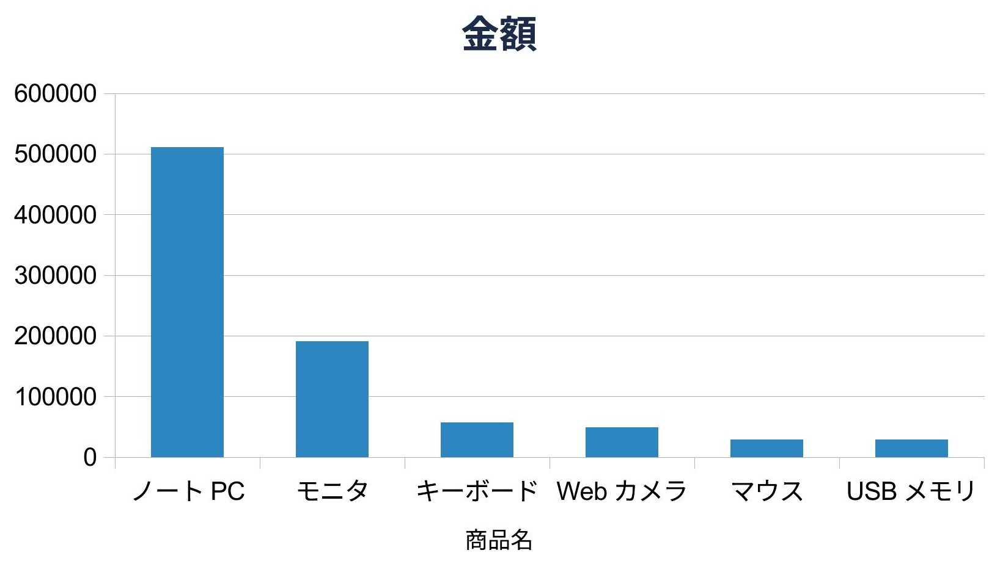

NATURAL LANGUAGE, TURNED INTO VERIFIED DOCUMENT EDITS
自然言語の指示を、ローカルの AI が LibreOffice のコードに翻訳し、実際の
.xlsx に適用します。Microsoft Office は要りません。そして
出来上がりを読み戻し、本当に変わったかを確かめてから完了とします。
道具もこのページも AI が書き、AI が描画して確かめました。 ailine は basrun の上に立っています。
この表は、自然言語の指示 8 つだけで作りました ― 単価の引き当て（VLOOKUP）・金額の計算・見出しの太字・低在庫の色付け・降順の並べ替え・罫線・列幅。Excel は使っていません
AI にコードを書かせて実行させる ―― それだけでは足りません。 「成功しました」と表示するコードは、何もしていなくてもそう表示します。 実際、エラーひとつ出さずに「読み込んだ / 実行した / 保存した」と表示され、 セルは 1 つも変わっていない、ということが起きます。
そこで ailine は、適用の前後で文書を読み戻して差分を取ります。 値・書式・色・罫線・結合・列幅・シート・グラフ ―― 変化がゼロなら 「何もしていない」とみなして書き直させます。動いた、ではなく、 本当に変わったことを機械で確かめてから、人に差分を見せます。
「金額で降順に並べ替えて」。ローカルの AI が LibreOffice のコードに翻訳します。
原本は触らず、コピーへ適用。壊しません。形式は .xlsx のままです。
読み戻して差分を確認。変化ゼロなら書き直し。★ 走った ≠ できた を機械で防ぎます。
難しい操作（並べ替え・グラフ・ピボット・VLOOKUP）は、 AI に一から書かせず、人が検証した部品を呼ばせます。当たり率が上がり、 「使う側は内部の名前を知らなくていい」まま、確実に動きます。
下の 2 枚は、すべて自然言語の一言から生まれ、 AI が描画して確かめたものです。値が正しいことと、見た目が正しいことは別なので、 その見た目も AI が描画して確かめています。

「金額の棒グラフを作って」― タイトル・軸は見出しから自動。LibreOffice の本物のグラフ

「部門ごとの金額を集計表に」― 罫線・カンマ・合計まで整えた表。本物のピボット(DataPilot)も生成できます
ローカルの小さな AI（qwen2.5-coder:7b）でも、値・論理・書式は
ほぼ一発で書けます。難所は検証済みの部品で補い、外部にデータは一切送りません。
必要なのは ローカルの LLM（ollama）と LibreOffice だけです。 Microsoft Office も、クラウド API も要りません。モデルは差し替えられます。
# 自然言語 → 生成 → コピーに適用 → 効果を検証 → 差分を表示 python ailine.py run 見積.xlsx "各行の金額に 単価 × 数量 を入れて" # 適用せず、生成した内容を見るだけ（レビュー用） python ailine.py run 見積.xlsx "..." --dry # 別のモデルに載せ替える（天井を上げたいとき） python ailine.py run 見積.xlsx "..." --model qwen2.5-coder:32b
検証済みのヘルパが、難しい UNO 操作を引き受けます ―
並べ替え・グラフ・ピボット・VLOOKUP・見出しの太字。モデルは「列と向き」だけ選べばよく、
ContainsHeader のような arcane な落とし穴には触れません。
確かめた範囲と、確かめていない範囲を分けて書きます。 聞かれてから答えるのと、先に書いておくのとでは意味が違うためです。
CharWeightAsian が要る点を実測で押さえました）。数値も壊れません。.xlsx であること。重い所（headless の LibreOffice を安全に駆動する部分）は basrun が持っています。 ailine が足したのは、自然言語からの生成と、効果を読み戻して検証する層です。 ―― 組んで初めて出来ることの方に、時間を使っています。